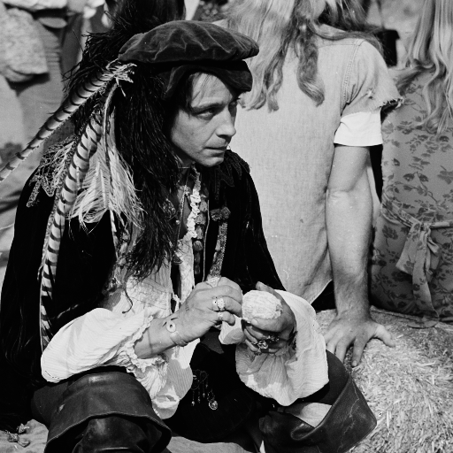
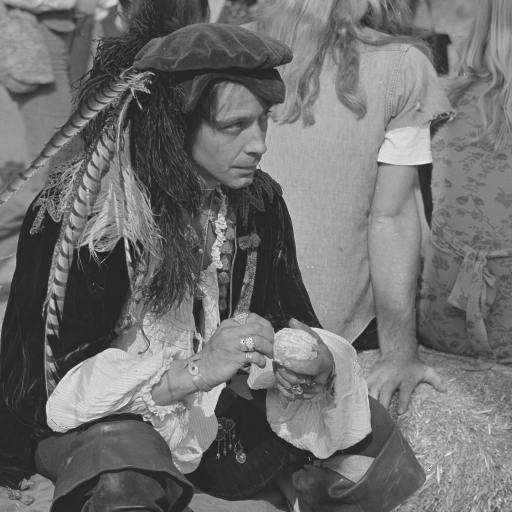
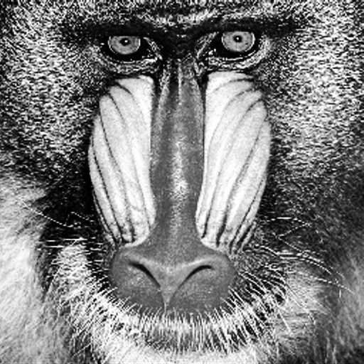
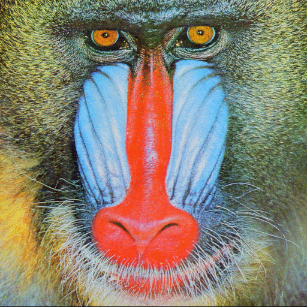
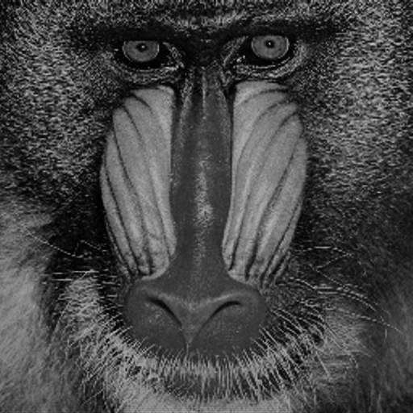
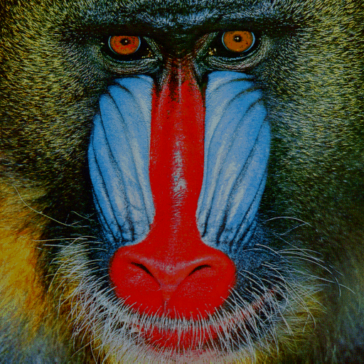

ImageContrastAdjustment.jl Documentation
A Julia package for enhancing and manipulating image contrast.
Getting started
This package is part of a wider Julia-based image processing ecosystem. If you are starting out, then you may benefit from reading about some fundamental conventions that the ecosystem utilizes that are markedly different from how images are typically represented in OpenCV, MATLAB, ImageJ or Python.
The usage examples in the ImageContrastAdjustment.jl package assume that you have already installed some key packages. Notably, the examples assume that you are able to load and display an image. Loading an image is facilitated through the FileIO.jl package, which uses QuartzImageIO.jl if you are on MacOS, and ImageMagick.jl otherwise. Depending on your particular system configuration, you might encounter problems installing the image loading packages, in which case you can refer to the troubleshooting guide.
Image display is typically handled by the ImageView.jl package. However, there are some known issues with this package. For example, on Windows the package has the side-effect of introducing substantial input lag when typing in the Julia REPL. Also, as of writing, some users of MacOS are unable to use the ImageView.jl package.
As an alternative, one can display an image using the Makie.jl plotting package. There is also the ImageShow.jl package which facilitates displaying images in Jupyter notebooks via IJulia.jl.
Finally, one can also obtain a useful preview of an image in the REPL using the ImageInTerminal.jl package. However, this package assumes that the terminal uses a monospace font, and tends not to produce adequate results in a Windows environment.
Another package that is used to illustrate the functionality in ImageContrastAdjustment.jl is the TestImages.jl which serves as a repository of many standard image processing test images.
Basic usage
Each contrast manipulation algorithm in ImageContrastAdjustment.jl is an AbstractHistogramAdjustmentAlgorithm.
Suppose one wants to enhance the contrast an image. This can be achieved by simply choosing an appropriate algorithm and calling adjust_histogram or adjust_histogram! in the image. The contrast will be automatically enhanced.
Let's see a simple demo:
using TestImages, ImageContrastAdjustment
img = testimage("cameraman")
alg = Equalization(nbins = 256)
img_adjusted = adjust_histogram(img, alg)This usage reads as "adjust_histogram of the image img with algorithm alg"
For more advanced usage, please check function reference page.
Examples
Below are some examples of contrast adjustment operations that this package facilitates.
|

Contrast Stretching |

Contrast Stretching |
|

Linear Stretching/Normalization |
Linear Stretching/Normalization |
|
Gamma Correction |
Gamma Correction |
|

Histogram Equalization |

Histogram Equalization |
|

Midway Histogram Equalization |

Midway Histogram Equalization |
|
Histogram Matching |
Histogram Matching |